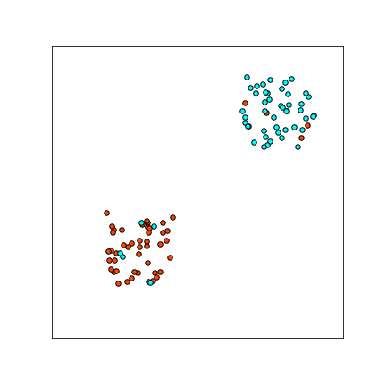

Refining the source of adversarial examples
We demonstrate that there exist adversarial examples which are just "bugs": aberrations in the classifier that are not intrinsic properties of the data distribution. In particular, we give a new method for constructing adversarial examples which:
We replicate the Ilyas et. al
experiment that "Non-robust features suffice for standard classification"
(Section 3.2 of
The message is, whether adversarial examples are features or bugs depends on how you find them — standard PGD finds features, but bugs are abundant as well.
We also give a simple example of a data distribution which has no "non-robust features" (under any reasonable definition of feature), but for which standard training yields a highly non-robust classifier. This demonstrates, again, that adversarial examples can occur even if the data distribution does not intrinsically have any vulnerable directions.
Ilyas et. al
Our main contribution is demonstrating that these worlds are not mutually exclusive — and in fact, we are in both.
Ilyas et al.
We propose a method to construct targeted adversarial examples for a given classifier $f$, which do not transfer to other classifiers trained for the same problem.
Recall that for a classifier $f$, an input example $(x, y)$, and target class $y_{targ}$, a targeted adversarial example is an $x'$ such that $||x - x'||\leq \eps$ and $f(x') = y_{targ}$.
The standard method of constructing adversarial examples is via Projected Gradient Descent (PGD)
Note that since PGD steps in the gradient direction towards the target class,
we may expect these adversarial examples have feature leakage from the target class.
For example, suppose we are perturbing an image of a dog into a plane (which usually appears against a blue background).
It is plausible that the gradient direction tends to make the dog image more blue,
since the "blue" direction is correlated with the plane class.
In our construction below, we attempt to eliminate such feature leakage.
Let $\{f_i : \R^n \to \cY\}_i$ be an ensemble of classifiers for the same classification problem as $f$. For example, we can let $\{f_i\}$ be a collection of ResNet18s trained from different random initializations.
We perform iterative updates to find adversarial attacks, as in PGD.
However, instead of stepping directly in the gradient direction, we
step in the direction
These adversarial examples will not be adversarial for the ensemble $\{f_i\}$. But perhaps surprisingly, these examples are also not adversarial for new classifiers trained for the same problem.
We train a ResNet18 on CIFAR10 as our target classifier $f$. For our ensemble, we train 10 ResNet18s on CIFAR10, from fresh random initializations. We then test the probability that a targeted attack for $f$ transfers to a new (freshly-trained) ResNet18, with the same targeted class. Our construction yields adversarial examples which do not transfer well to new models.
For $L_{\infty}$ attacks:
| Attack Success | Transfer Success | |
|---|---|---|
| PDG | 99.6% | 52.1% |
| Ours | 98.6% | 0.8% |
For $L_2$ attacks:
| Attack Success | Transfer Success | |
|---|---|---|
| PDG | 99.9% | 82.5% |
| Ours | 99.3% | 1.7% |
Using the above, we can construct adversarial examples
which do not suffice for learning.
Here, we replicate the Ilyas et. al experiment
that "Non-robust features suffice for standard classification"
(Section 3.2 of
To review, the Ilyas et. al non-robust experiment was:
The conclusion of Ilyas et. al. is that Step (3) shows adversarial examples must have a meaningful "feature" component. However, for adversarial examples constructed using our method, Step (3) fails. In fact, $f'$ has good accuracy with respect to the "label-shifted" distribution $(X, Y+1)$, which is intuitively what we trained on.
For $L_2$ attacks:
| Test Acc on CIFAR: $(X, Y)$ | Test Acc on Shifted-CIFAR: $(X, Y+1)$ | |
|---|---|---|
| PDG | 33.2% | 27.3% |
| Ours | 2.8% | 70.8% |
For $L_{\infty}$ attacks:
| Test Acc on CIFAR: $(X, Y)$ | Test Acc on Shifted-CIFAR: $(X, Y+1)$ | |
|---|---|---|
| PDG | 23.7% | 40.4% |
| Ours | 2.5% | 75.9% |
To further illustrate that adversarial examples can be "just bugs",
we show that they arise even when the true data distribution has no "non-robust features" —
that is, no intrinsically vulnerable directions.
The problem is to distinguish between CIFAR-sized images that are either all-black or all-white, with a small amount of random pixel noise and label noise.

Formally, let the distribution be as follows.
Pick label $Y \in \{\pm 1\}$ uniformly,
and let $$X :=
\begin{cases}
(+\vec{\mathbb{1}} + \eta_\eps) \cdot \eta & \text{if $Y=1$}\\
(-\vec{\mathbb{1}} + \eta_\eps) \cdot \eta & \text{if $Y=-1$}\\
\end{cases}$$
where $\eta_\eps \sim [-0.1, +0.1]^d$ is uniform $L_\infty$ pixel noise,
and
$\eta \in \{\pm 1\} \sim Bernoulli(0.1)$ is the 10% label noise.
A plot of samples from a 2D-version of this distribution is shown to the right.
Notice that there exists a robust linear classifier for this problem which achieves perfect robust classification, with up to $\eps = 0.9$ magnitude $L_\infty$ attacks.
However, if we sample 10000 training images from this distribution, and train
a ResNet18 to 99.9% train accuracy,
The input-noise and label noise are both essential for this construction.
One intuition for what is happening is: in the initial stage of training
the optimization learns the "correct" decision boundary (indeed, stopping after 1 epoch results in a robust classifier).
However, optimizing for close to 0 train-error requires a network with high Lipshitz constant
to fit the label-noise, which hurts robustness.
Figure adapted from our paper.
As an addendum, we observe that the "non-robust features"
experiment of
To see this, recall that original "non-robust features" experiment shows:
1. If we train on distribution $(X^{Y \to (Y+1)}, Y+ 1)$ the classifier learns to predict well on distribution $(X, Y)$.
By permutation-symmetry of the labels, this implies that:
2. If we train on distribution $(X^{Y \to (Y+1)}, Y)$ the classifier learns to predict well on distribution $(X, Y-1)$.
Note that in case (2), we are training with correct labels (just perturbing the inputs imperceptibly),
but the classifier learns to predict the cyclically-shifted labels.
Concretely, using the original numbers of
Table 1 in
This should extend to attacks that force arbitrary desired permutations of the labels.
We thank Ilya Sutskever, Jacob Steinhardt, and Gabriel Goh for helpful discussion and collaborations. We thank Christopher Olah and Aditya Ramesh for comments on an early draft.
We use cross-entropy loss, and images normalized to lie within $[0, 1]^{32 \times 32 \times 3}$.
For $L_2$ attacks, we used $\eps = 2.5$, step-size $\alpha = 0.5$, and 10 PGD steps. As is standard, we use a variant of PGD where we normalize the size of each gradient step to be of $L_2$-norm $\alpha$.
For $L_\infty$ attacks, we used $\eps= 8/ 255$ and $\alpha = 2/255$, and 10 PGD steps. As is standard, we take steps using the sign of the gradient.
Projected Gradient DescentPGD is the following: